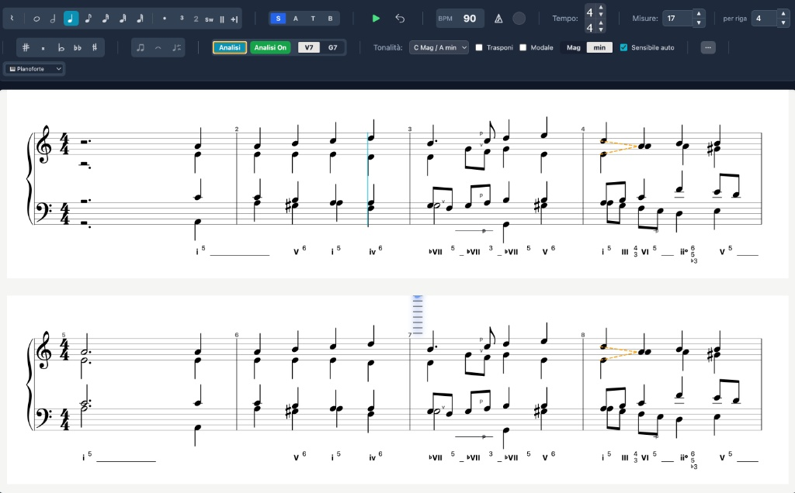
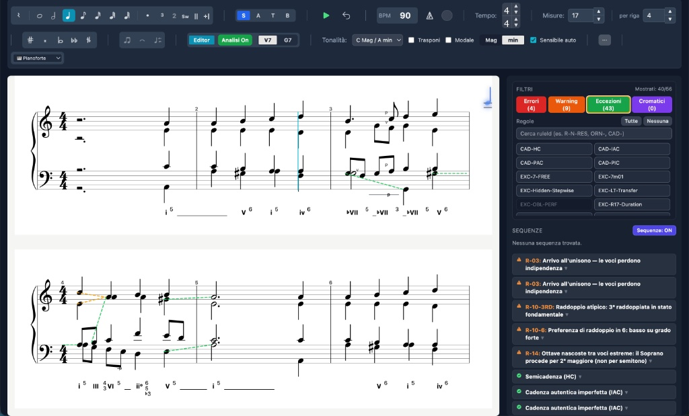
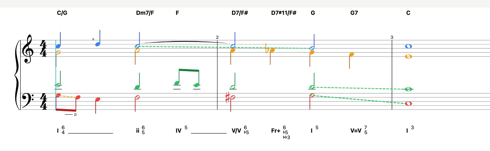
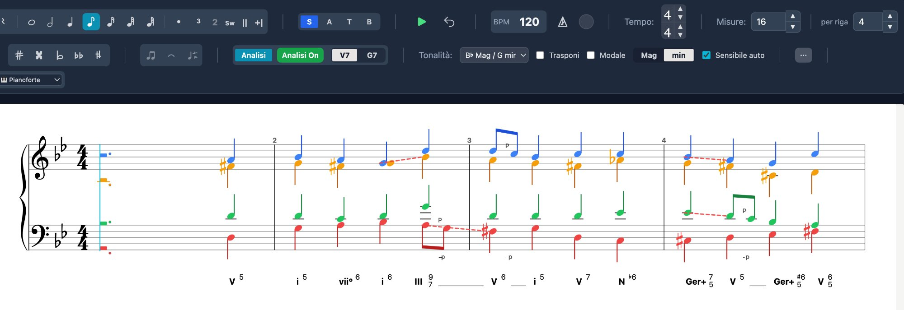
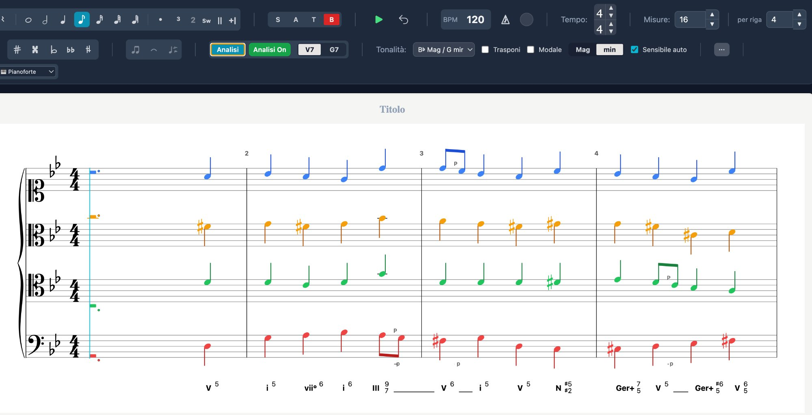
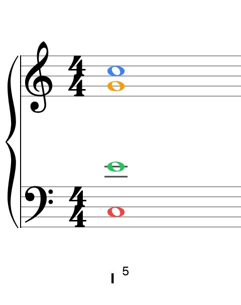
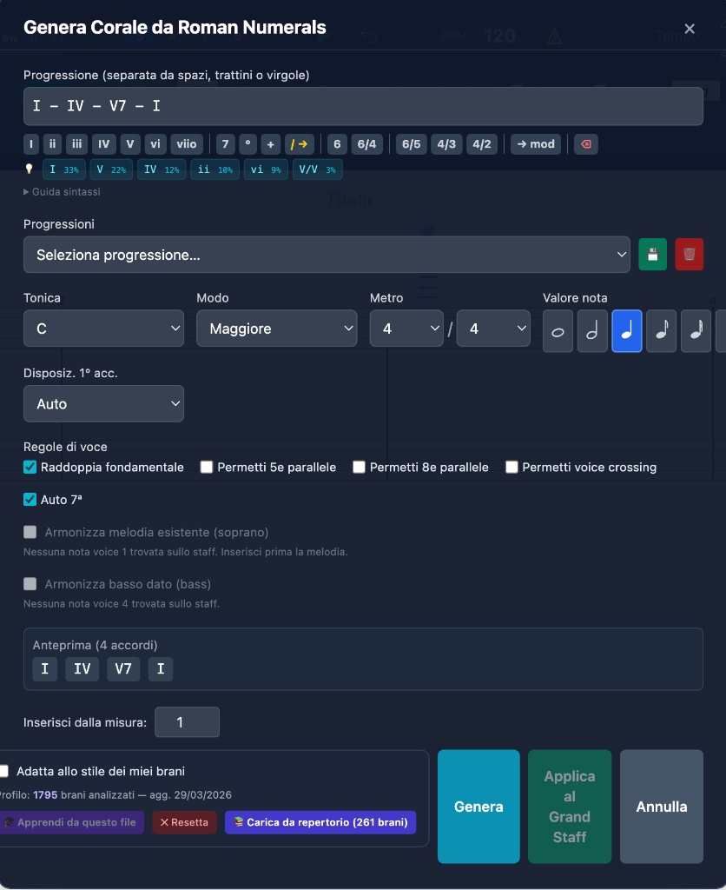

Write in four voices, get instant feedback on errors, cadences and voice-leading. Roman numerals and chord symbols in real time. For students and teachers.

Harmony students get no immediate feedback at home. Mistakes accumulate and are only corrected in the next lesson.
Students only discover their errors in class, when the context is already forgotten.
Teachers keep flagging the same technical mistakes instead of focusing on musicality.
There is currently no software offering real-time harmonic analysis on a professional SATB editor.
Watch how the analysis engine reacts in real time to voice movement.
Harmony Tutor: Real-time harmonic analysis
Enharmonic change: augmented sixths vs dominant
Diminished chords: 4 resolutions with the same notes
Video Tour: Real-Time SATB Harmonic Analysis
Autumn leaves Analysis: Real-Time SATB Harmonic Analysis
14-step analysis engine, 40+ SATB rules with exceptions, corpus-guided chorale realizer.
Four independent voices. All durations, accidentals, 24 keys. Grand Staff layout, ancient clefs, close and open voicing.
Roman numerals below and chord symbols above the staff. 14-step pipeline with a corpus of 260+ pieces.
Errors, warnings, exceptions. Each flag includes a code, description and suggestion. Context-sensitive.
Passing tones, neighbor tones, appoggiaturas, anticipations, escape tones, suspensions and changing tones. Separated from chordal analysis.
Generates SATB from Roman numerals. Beam-search with 8 candidates. Soprano or bass constraints. Corpus-based suggestions.
MIDI, MusicXML 4.0, PDF, PNG. MIDI format 0 (single track) and 1 (voice per track). Compatible with MuseScore, Finale, Sibelius.
Harmony Tutor digitizes assignment exchange and technical correction, allowing lessons to focus on aesthetic and interpretive aspects.
Harmony Tutor files are fully editable and streamline teaching communication:
MusicXML 4.0 export enables integration with all major notation software (Finale, Sibelius, MuseScore), ensuring flexibility across different platforms.
Students get immediate feedback on technical errors during individual study. This reduces manual correction time in class, leaving more room for stylistic discussion.
The analysis engine applies SATB rules rigorously, providing teachers with a verified technical baseline on which to build their own critical and interpretive review.

Severity filters, expandable violations and recognized cadences
Functional notation below the staff, modern chord symbols above (C, Am, D7/F#, Dm7, G7...). Independently toggleable.

Green = allowed movements and cadences. Orange = warning. Red = error.

Write in one layout, view in another. Grand Staff, ancient clefs, close voicing, open voicing. Notes remain unchanged.


Soprano blue, Alto orange, Tenor green, Bass red. Instant identification.
Enter the progression, the realizer generates four voices. Suggestions from a corpus of 260+ analyzed pieces.

No subscription. Updates included.
Try all features with no limits for 10 days. No credit card required.
Download the complete user manual with all features, shortcuts and detailed instructions.
↓ Download user manual (PDF)